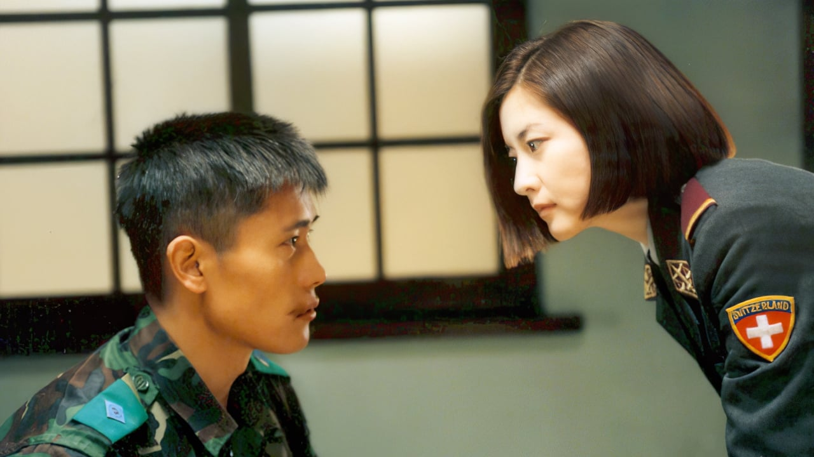

Park Chan-wook
Park Chan-wook
HOME
감독 소개
작품 특징
수상 내역
FILMOGRAPHY
수상 내역

# 공동경비구역 JSA(2000년작)
2000년 제8회 춘사영화상 최우수작품상
2000년 제8회 춘사영화상 감독상
2000년 제21회 청룡영화상 한국영화 최다관객상
2000년 제21회 청룡영화상 최우수작품상
2000년 제21회 청룡영화상 감독상
2000년 제3회 디렉터스 컷 시상식 올해의 감독상
2001년 제37회 백상예술대상 영화부분 감독상
2001년 도빌아시아영화제 관객이 주는 인기상
2001년 도빌아시아영화제 최우수작품상
2001년 제38회 대종상 최우수작품상
2001년 제27회 시애틀국제영화제 신인감독심사위원특별상
# 복수는 나의 것(2002년작)
2002년 제3회 부산영화평론가협회상 최우수작품상
2002년 제3회 부산영화평론가협회상 감독상
2002년 이탈리아 필름느와르 페스티벌 심사위원 특별상
2002년 제5회 디렉터스 컷 시상식 올해의 감독상
2003년 제5회 우디네 극동영화제 관객상
2003년 제16회 도쿄국제영화제 특별언급상
# 올드보이(2003년작)
2003년 제24회 청룡영화상 감독상
2004년 제57회 칸 영화제 심사위원대상
2004년 제3회 대한민국 영화대상 최우수작품상
2004년 제3회 대한민국 영화대상 감독상
2004년 제40회 백상예술대상 영화부분 감독상
2004년 제41회 대종상 감독상
2004년 제49회 아시아 태평양 영화제 감독상
2004년 제12회 춘사영화상 심사위원특별상
2004년 제5회 부산영화평론가협회상 최우수작품상
2004년 제5회 부산영화평론가협회상 감독상
2004년 제37회 시체스 영화제 오피셜 판타스틱-최우수작품상
2004년 제15회 스톡홀름영화제 관객상
2004년 제7회 디렉터스 컷 시상식 올해의 감독상
2004년 제7회 디렉터스 컷 시상식 올해의 영화인상
2004년 제1회 대한민국 대학영화제 올해의 감독상
2005년 제24회 홍콩금상장영화제 아시아영화상
2005년 제10회 홍콩금자형장 10대외국어영화상
2005년 제3회 방콕국제영화제 감독상
2005년 오포르토 국제영화제 최우수작품상
# 친절한 금자씨(2005년작)
2005년 제26회 청룡영화상 최우수 작품상
2005년 제25회 한국영화평론가협회상 10대영화상
2005년 제9회 자랑스러운 서강인상
2006년 제4회 방콕국제영화제 감독상
2006년 로얄살루트 마크 오브 리스펙트상
2006년 2006 대한민국 문화콘텐츠 수출 유공자 포상 대통령표창
2006년 오포르토 국제영화제 감독상
# 싸이보그지만 괜찮아(2006년작)
2007년 제36회 누보시네마영화제 관객상
2007년 제57회 베를린국제영화제 알프레드 바우어상
2007년 제40회 시체스 영화제 오피셜 판타스틱-최우수각본상
2008년 제28회 오포르토 국제영화제 특별언급상
# 미쓰 홍당무(2008년작)
2008년 제11회 디렉터스 컷 시상식 올해의 제작자상
2008년 제29회 청룡영화상 각본상
# 박쥐(2009년작)
2009년 제62회 칸 영화제 심사위원상
2009년 제17회 춘사영화상 감독상
2009년 스타일 아이콘 어워즈 문화예술부문상
2009년 제4회 에이어워즈(남성 패션 잡지 '아레나 옴므 플러스' 선정)
2009년 제9회 마라케시 국제영화제 골드스타상
2009년 제12회 디렉터스 컷 시상식 올해의 감독상
2009년 제13회 판타지아 영화제 베스트 아시아 영화-동상
2010년 브뤼셀 판타스틱 국제 영화제 심사위원특별상
2010년 제4회 아시아 태평양 영화제 넷팩 개발상
# 파란만장(2011년작)
2011년 제61회 베를린국제영화제 단편영화부문 황금곰상
2011년 제44회 시체스 영화제 오피셜 놉스 비젼 최우수 작품상
2011년 스파이크 아시아 광고제 필름크래프트부문 은상
2011년 제11회 대한민국청소년영화제 감독상
# 아가씨(2016년작)
2016년 제25회 부일영화상 부일독자심사단상
2016년 제36회 한국영화평론가협회상 10대영화상
2016년 얼라이언스 오브 우먼 필름 저널리스트 최우수외국어영화상
2016년 제29회 시카고비평가협회상 각색상
2017년 제42회 LA비평가협회상 외국어영화상
2017년 제35회 브뤼셀국제판타스틱영화제 까마귀 기사상 공로상
2017년 제8회 올해의 영화상 올해의 영화인상
2017년 제49회 시체스국제영화제 관객상
2017년 제53회 백상예술대상 영화부문 대상
2018년 제71회 영국 아카데미 영화상 시상식 외국어영화상
# 헤어질 결심(2022년작)
2022년 제75회 칸 영화제 감독상
2022년 제27회 춘사영화제 최우수 감독상
2022년 제42회 한국영화평론가협회상 감독상
2022년 제42회 한국영화평론가협회상 각본상
2022년 제42회 한국영화평론가협회상 작품상
2022년 제43회 청룡영화상 감독상
2022년 제43회 청룡영화상 각본상
2022년 제43회 청룡영화상 최우수작품상
2022년 제58회 대종상 시나리오상
2022년 제58회 대종상 최우수작품상
2023년 제59회 백상예술대상 영화부문 감독상